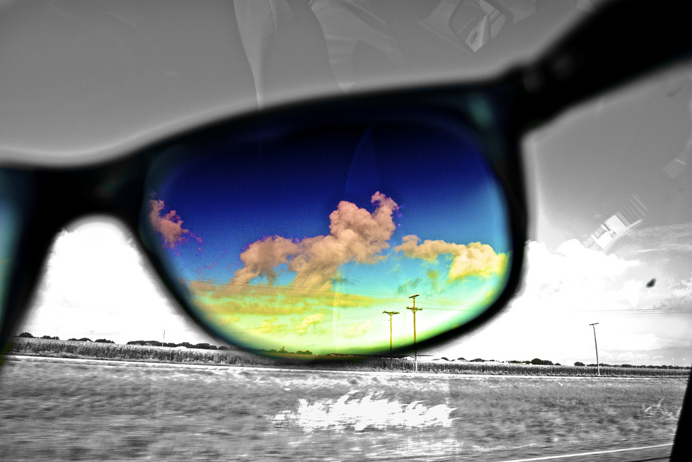

I am not a big sports fan but I love to watch hockey and my siblings in their games.

"I've learned that two people can look at the exact same thing and see something totally different."
I like these kinds of pictures because I find them really cool and it shows you that your eyes can decieve you.